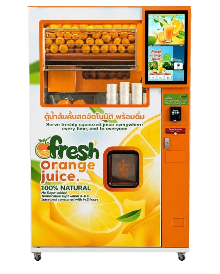

신선한 착즙
모든 잔,
모든 한 방울
자동 신선 착즙 오렌지 주스 자판기 — 얼음 없음, 설탕 없음, 3~9°C 온도 유지. 언제 어디서나 모든 분께.

왜 인가?
인가?
최고 품질의 오렌지를 엄선하여 청결하고 안전한 공정을 통해 최고의 신선 착즙 주스를 제공합니다.
엄선된 프리미엄 오렌지
대만산 만다린 오렌지를 프리미엄 등급으로 엄선. 달콤하고 즙이 많으며 비타민C가 풍부합니다.
순수 주스, 얼음 없음
진짜 오렌지 100%를 즉석에서 착즙. 얼음 없음, 설탕 없음, 천연 그대로의 진한 맛.
안전하고 무첨가
설탕 미첨가, 방부제 없음, 인공색소 없음. 모든 컵이 자연 그대로의 순수함.
3~9°C 냉각 신선 유지
내장 냉각 시스템으로 상시 3~9°C 유지. 최상의 신선도를 위해 2시간 이내에 드세요.
스마트 완전 자동 시스템
정밀 자동 착즙 기술. 청결하고 정확하며 완전 밀폐 시스템으로 오염 방지.
친환경
재활용 가능한 컵으로 플라스틱 쓰레기 감소. 나에게도, 지구에게도 좋은.
눈앞에서
바로 짜낸 신선함, 숨김 없음
O'Fresh는 투명한 창문으로 모든 착즙 과정을 직접 볼 수 있습니다. 오렌지가 컵 속 신선한 주스가 되는 모든 과정을 확인하세요.
완전 투명한 공정
투명한 창문으로 처음부터 끝까지 모든 착즙 과정을 확인할 수 있습니다.
항상 신선하게
주문 즉시 착즙. 주스 재고 저장 없음, 전날 재고 없음.
건강하고 비타민 풍부
진짜 신선한 오렌지의 천연 항산화 물질과 비타민C가 풍부.
사용법
단 3단계로 신선 착즙 오렌지 주스를 즐기세요. 기다림 없고, 번거로움 없음.
화면에서 "Card" 버튼 누르기
O'Fresh 자판기로 가서 터치스크린의 "Card" 버튼을 눌러 주문을 시작하세요.


결제 방법 선택
자판기 하단의 검은 박스에서 원하는 결제 방법을 선택하세요. PromptPay, TrueMoney, 위챗페이, VISA/Mastercard 지원.
30~45초 기다린 후 주스 받기!
30~45초만 기다리면 눈앞에서 오렌지가 착즙됩니다. 필름 씰이 자동으로 부착된 후 문이 열리면 컵을 가져가세요!

왜가 더 좋은가?
오렌지 선별부터 손에 든 컵까지 모든 세부 사항에 신경 씁니다.
진짜 오렌지, 농축액 아님
농축액으로 만드는 일반 오렌지 주스와 달리, O'Fresh는 매 컵 진짜 오렌지 전체를 착즙합니다.
밀폐 시스템으로 위생적·안전
착즙의 모든 과정이 완전히 밀폐되어 사람 손이 닿지 않아 오염 위험을 최소화합니다.
편리한 위치
O'Fresh 자판기는 치앙마이 센트럴 페스티벌 4층 푸드코트에 설치되어 언제나 신선함을 제공합니다.
합리적인 가격, 편리한 결제
합리적인 가격의 프리미엄 신선 주스. 비접촉 결제를 포함한 다양한 결제 수단 지원.
궁금하신 점이 있나요?
O'Fresh 에 대해 자주 묻는 질문을 모았습니다
한 컵 69바트（280ml）. QR코드 또는 신용카드/직불카드로 결제 가능합니다.
O'Fresh는 치앙마이 센트럴 페스티벌 4층 푸드코트에 있습니다. 24시간 운영합니다.
QR코드 / PromptPay, TrueMoney, 위챗페이, VISA/Mastercard 카드 결제 지원. Google Wallet 및 Apple Pay는 미지원.
방부제가 없으므로 최상의 맛과 영양을 위해 착즙 후 2시간 이내에 드세요.
대만산 프리미엄 만다린 오렌지. 달콤하고 즙이 많으며 비타민C가 풍부합니다. 항상 3~9°C에서 보관.
전혀 없습니다 — 설탕 없음, 얼음 없음, 방부제 없음, 인공색소 없음. 100% 순수 신선 착즙 주스입니다.
전화 087-986-7000 또는 LINE @ofresh 로 연락해 주세요. 팀이 매일 도움을 드립니다.